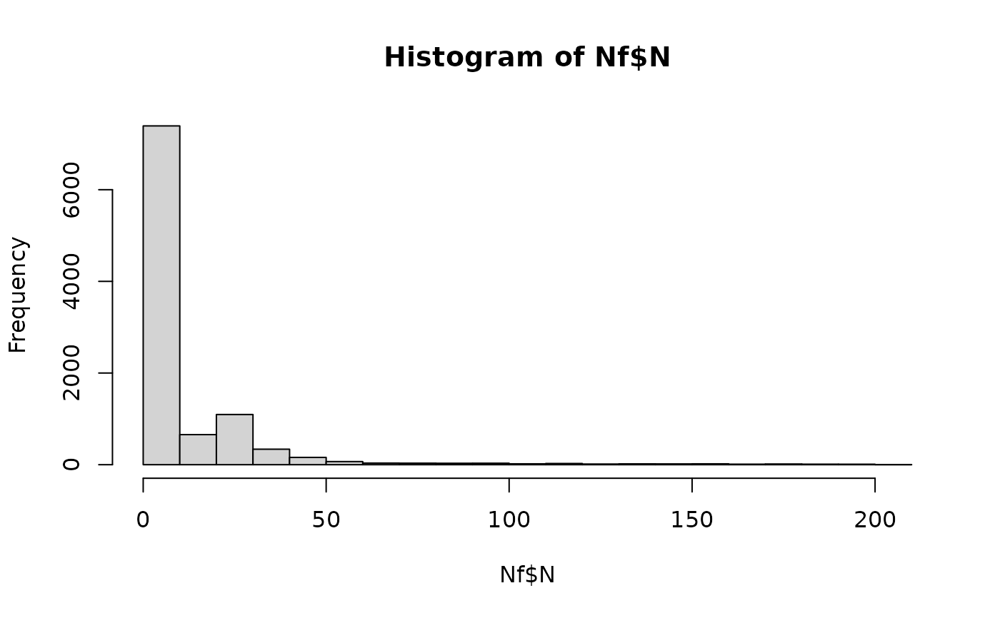

Cross-contamination of fish fillets during brine injection or dry-salting
Source:R/sfBrineORsaltCC.R
sfBrineORsaltCC.RdThe function sfBrineORsaltCC() simulates the potential internal or external cross-contamination of fish fillets during the process of salting, either by
brine injection or by dry-salting, respectively. The type of salting applied in a lot of fish fillets is mutually exclusive; so
the probability that a lot of fish fillets is salted via brine injection is pBrine, and the complement 1-Pcc_salting is the
probability that the lot of fish fillets is treated by external dry-salting. Since this algorithm relies on two functions: sfBriningCC() and
sfSmearingCC(), the arguments of both functions must be provided to sfBrineORsaltCC().
Usage
sfBrineORsaltCC(
data = list(),
pBrine,
pccBrine,
volInjMin,
volInjMode,
volInjMax,
concBrineMin,
concBrineMode,
concBrineMax,
pccSmearing,
nSurface,
trSmearingMean,
trSmearingSd
)Arguments
- data
a list of
N(
CFU) A matrix of sizenLotslots bysizeLotunits containing the numbers of L. monocytogenes in/on fish fillets;PMean prevalence of contaminated lots (scalar);
ProbUnitPosProbability of individual lots being contaminated (vector).
- pBrine
Probability that a lot of fish fillets is salted by brine injection (as opposed to dry-salting) (scalar).
- pccBrine
Probability that the brine solution is contaminated with L. monocytogenes (scalar).
- volInjMin
(
ml) minimum volume of brine solution injected in a fish fillet (scalar).- volInjMode
(
ml) most likely volume of brine solution injected in a fish fillet (scalar).- volInjMax
(
ml) maximum volume of brine solution injected in a fish fillet (scalar).- concBrineMin
(
CFU/ml) minimum concentration of L. monocytogenes in contaminated brine solution (scalar).- concBrineMode
(
CFU/ml) most likely concentration of L. monocytogenes in contaminated brine solution (scalar).- concBrineMax
(
CFU/ml) maximum concentration of L. monocytogenes in contaminated brine solution (scalar).- pccSmearing
Probability that cross-contamination with L. monocytogenes occurs during dry salting, or smearing the fillets with sugar/spices, through tables or other surfaces (scalar).
- nSurface
(CFU) Numbers of L. monocytogenes cells on table or surfaces in contact with fish fillets while dry salting (scalar or vector).
- trSmearingMean
Mean parameter of the normal distribution representing the variability in the log 10 of the transfer coefficient of L. monocytogenes cells from surfaces to fish fillets (scalar or vector).
- trSmearingSd
Standard deviation parameter of the normal distribution representing the variability in the log 10 of the transfer coefficient of L. monocytogenes from surfaces to fish fillets (scalar or vector).
Value
A list of three elements:
N(
CFU) A matrix of size nLots lots by sizeLot units containing the numbers of L. monocytogenes in salted fish;ProbUnitPosProbability of individual lots being contaminated after salting (vector);
PMean prevalence of contaminated lots after salting (scalar).
Note
The suggested value of \(probCCDice\_brine=0.135\) is taken from Gudmundsdóttir et al. (2005)
and
Gudbjörnsdóttir et al. (2004)
, who analysed the presence of L. monocytogenes in brine solution, detecting
3 positive samples out of 14, and 2 positive samples out of 23, respectively. The suggested parameters \(TR\_smearing\_mean=-0.29\)
and \(TR\_smearing\_sd=0.31\) for the normal distribution about the variability in the log 10 of the transfer coefficient of L. monocytogenes were taken
from Hoelzer et al. (2012)
, to represent cross-contamination from board to meat.
The parameters of the Pert distributions about mean volume of brine solution injected in a fish fillet (volInjMin, volInjMode and volInjMax),
and about mean concentration of L. monocytogenes in brine (concBrineMin, concBrineMode and concBrineMax) must be defined by the user and/or
tested in scenarios. Similarly, the values of pBrine, Pcc_salting and nSurface must be defined by the user and/or assessed in scenarios.
References
Gudbjörnsdóttir B, Suihko M, Gustavsson P, Thorkelsson G, Salo S, Sjöberg A, Niclasen O, Bredholt S (2004). “The incidence of Listeria monocytogenes in meat, poultry and seafood plants in the Nordic countries.” Food Microbiology, 21(2), 217-225. doi:10.1016/S0740-0020(03)00012-1 , cited By 148. Gudmundsdóttir S, Gudbjörnsdóttir B, Lauzon HL, Einarsson H, Kristinsson KG, Kristjánsson M (2005). “Tracing Listeria monocytogenes isolates from cold-smoked salmon and its processing environment in Iceland using pulsed-field gel electrophoresis.” International journal of food microbiology, 101(1), 41-51. doi:10.1016/j.ijfoodmicro.2004.08.023 , cited By 63. Hoelzer K, Pouillot R, Gallagher D, Silverman MB, Kause J, Dennis SB (2012). “Estimation of Listeria monocytogenes transfer coefficients and efficacy of bacterial removal through cleaning and sanitation.” International Journal of Food Microbiology, 157, 267-77. doi:10.1016/j.ijfoodmicro.2012.05.019 . Team RC (2022). R: A Language and Environment for Statistical Computing. R Foundation for Statistical Computing, Vienna, Austria. https://www.R-project.org/.
Author
Ursula Gonzales-Barron ubarron@ipb.pt
Examples
dat <- Lot2LotGen(
nLots = 50,
sizeLot = 100,
unitSize = 500,
betaAlpha = 0.5112,
betaBeta = 9.959,
C0MeanLog = 1.023,
C0SdLog = 0.3267,
propVarInter = 0.7
)
df <- sfBrineORsaltCC(dat,
pBrine = 0.2,
pccBrine = 0.13,
volInjMin = 0.5,
volInjMode = 1.2,
volInjMax = 4.5,
concBrineMin = 0,
concBrineMode = 3,
concBrineMax = 40,
pccSmearing = 0.05,
trSmearingMean = -0.29,
trSmearingSd = 0.31,
nSurface = 200)
#> Length of index_brine: 14
#> Length of index_salt: 36
#> Length of ProbUnitPos_brine_out: 14
#> Length of ProbUnitPos_salt_out: 36
hist(df$N)
